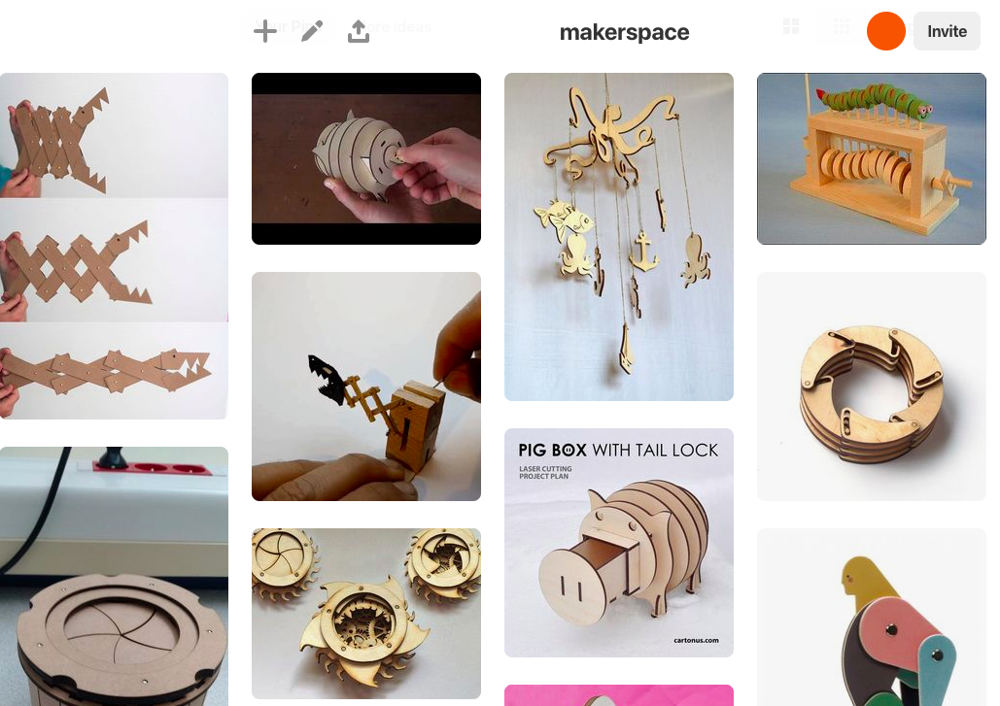
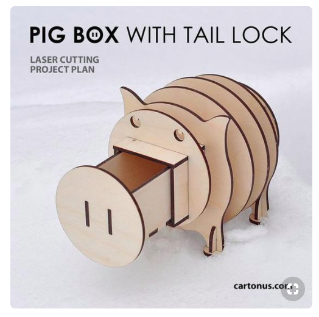
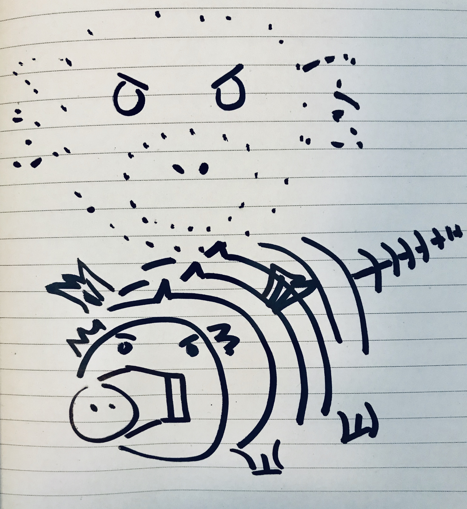

Bella's A7: Final Project Proposal
Concept
- Step 1: Inspiration, Context, Intended Use Case
- Step 2: Concept Sketches
I went to Pinterest to look for some inspiration and started to make a board with interesting options. This is the board I created. I narrowed down on the pig box with a tail lock. Instead of creating a pig I decided to create my own character - a dragon. Similar to the pig box, the intented use case of this item is a box.
 
Using the pig box as a base, I adjusted the drawing to look more like a dragon.

Breakdown of Tasks
- Task 1: Laster Cuting from A1 & A2
- Task 2: CAD Modelling from A2
- Task 3: 3D Printing from A3 & A4
- Task 4: Box Joints & Moving Parts from A4 & A5
Timeline with Contingency Plans
- Day 1: CAD Modelling in Rhino/Onshape and adjust with Illustrator - Monday, May 27
- Day 2: Test Prints - 3D print slots and laser cut practice pieces and CAD Model Adjustments - Tuesday, May 28
- Day 3: Real Deal! 3D print slots and laser cut pieces with pieces arriving from Amazon- Wednesday, May 29
- Day 4: Wrap up; Time allocated for adjustments or errors - Tuesday, June 4
Bill of Materials with Sourcing Schedule
- Clear Filament for 3D printing - already own
- Chipboard 12x12 Sheet - Arriving Wednesday, May 28
- Acrylic Plexiglass 12x12 sheet Arriving Wednesday, May 28
Peer-Teacher-Staff Attribution
N/A - Amazon?